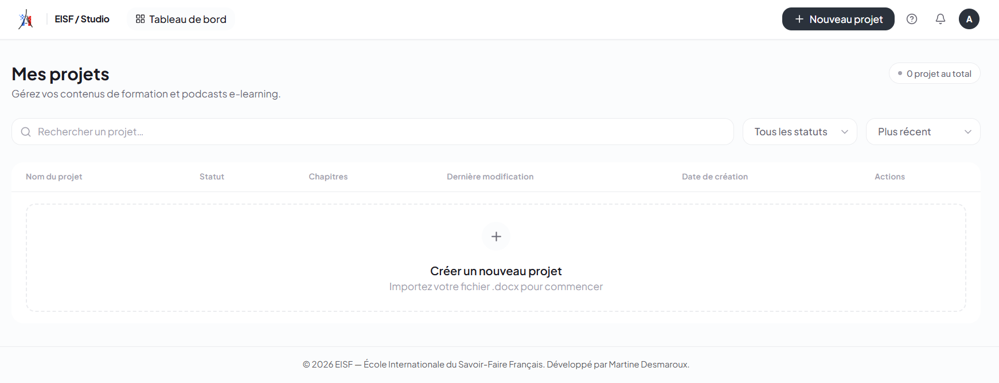
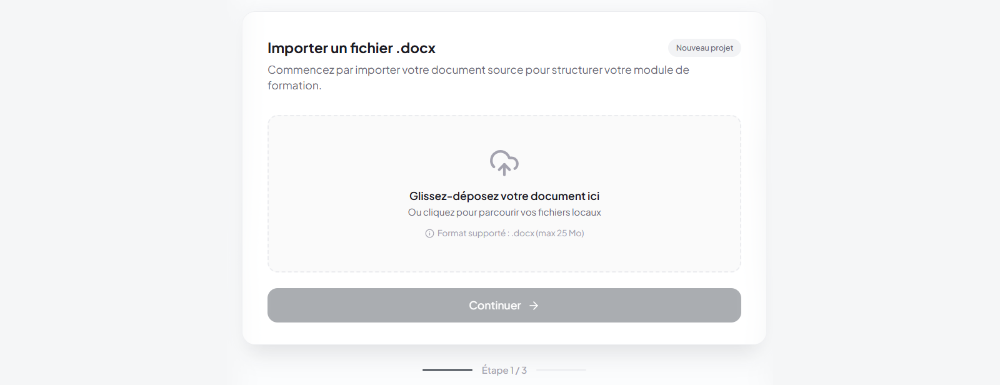
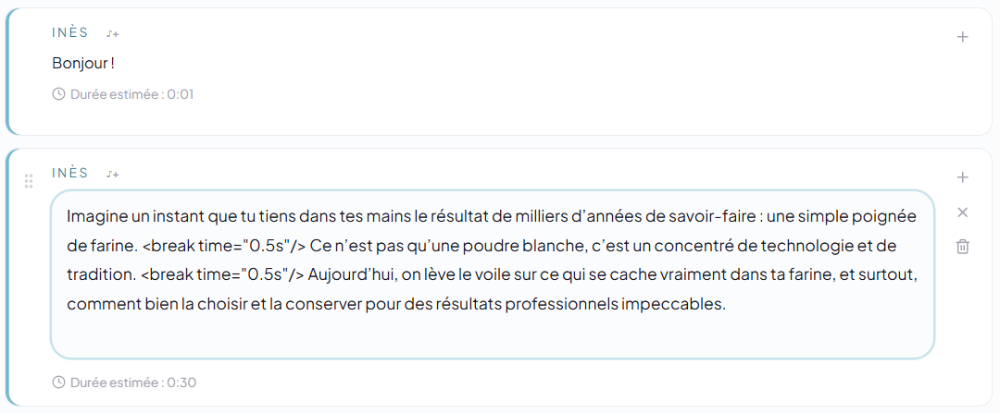

Transformez vos cours en podcasts pédagogiques
Ce guide vous accompagne pas à pas, de l'import de votre fichier Storyline jusqu'à l'export du podcast final.
🔗 https://en.eisf.fr/studioSe connecter
Accéder à Studio EISF depuis votre navigateur

- Ouvrir https://en.eisf.fr/studio dans votre navigateur
- Saisir l'identifiant et le mot de passe fournis par votre administrateur
- Cliquer sur Se connecter
Importer votre cours Storyline
Format accepté : export Word d'Articulate Storyline (.docx) sans images

- Sur le tableau de bord, cliquer sur Nouveau projet
- Glisser votre fichier .docx dans la zone d'import, ou cliquer pour le sélectionner

- L'outil détecte automatiquement les chapitres — vérifier la liste affichée

- Donner un nom au projet et valider
Générer le dialogue IA
L'IA crée un dialogue naturel entre Inès et Yannick

- Sélectionner un chapitre dans la liste
- Cliquer sur Générer le dialogue
- Attendre la génération (30 à 60 secondes selon la longueur)
Vérifier la fidélité au contenu
Garantir que le dialogue respecte votre cours source
Après génération, l'IA vérifie automatiquement que le dialogue respecte votre cours source.
Quand l'IA ajoute du contenu absent de votre cours source, elle le signale :

[PROPOSITION: exemple concret que j'ajoute pour illustrer]
Éditer le dialogue
Modifier les répliques directement dans l'éditeur

- Cliquer sur une réplique pour la modifier directement
- Les modifications sont sauvegardées automatiquement
- Relancer la vérification après toute modification importante

Vous pouvez activer un son de transition avant certaines répliques (ex : début de section) en utilisant le bouton son disponible sur chaque réplique.
Générer l'audio
Synthèse vocale par les voix Inès et Yannick (ElevenLabs)

- Vérifier que toutes les propositions sont résolues et le score ≥ 95%
- Cliquer sur Générer l'audio
- Attendre la synthèse vocale (1 à 3 minutes selon la durée)
- Écouter l'aperçu dans le lecteur intégré
Exporter le podcast
Deux formats disponibles

| Format | Usage |
|---|---|
| MP3 | Podcast final à diffuser aux apprenants |
| Word | Dialogue écrit (usage interne) |
Aide & dépannage
Solutions aux problèmes les plus fréquents
| Problème | Solution |
|---|---|
| Le fichier .docx n'est pas reconnu | Vérifier que c'est un export Storyline sans images, pas un Word classique |
| La génération échoue | Vérifier la connexion internet et relancer |
| Score de fidélité bas | Corriger les passages inventés dans l'éditeur, relancer la vérification |
| L'audio est coupé | Rafraîchir la page et régénérer l'audio |
| Bouton audio grisé | Résoudre toutes les balises [PROPOSITION] d'abord |
| Mot de passe oublié | Contacter contact@eisf.fr |
Problème non résolu ?
contact@eisf.fr